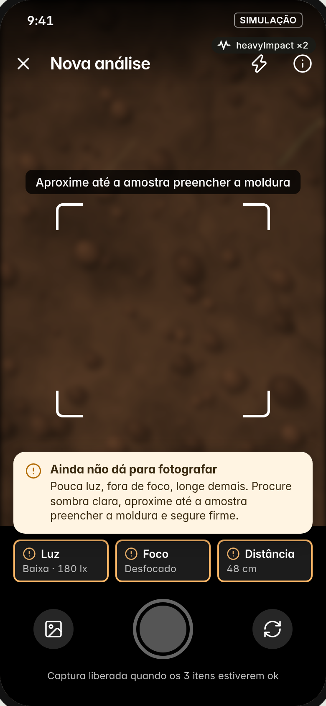
12 Foto ruim: aviso legível parado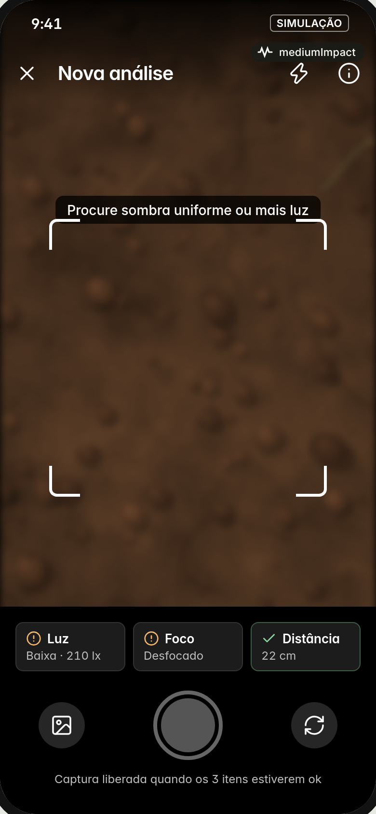
28 Captura (mediumImpact)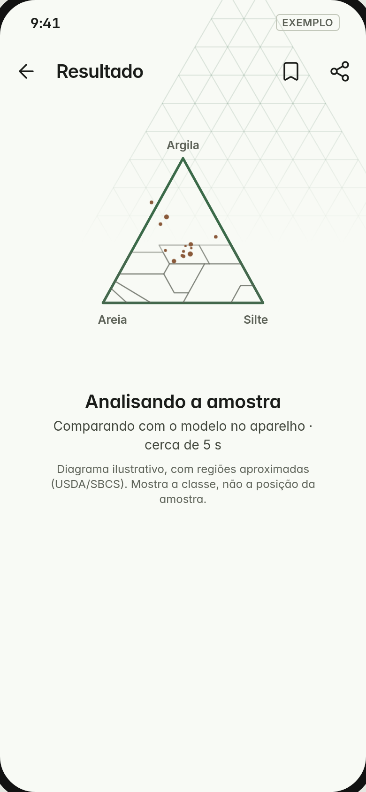
29 Processando: partículas caindo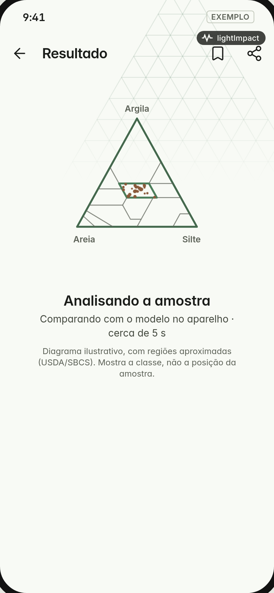
30 Assentamento (lightImpact)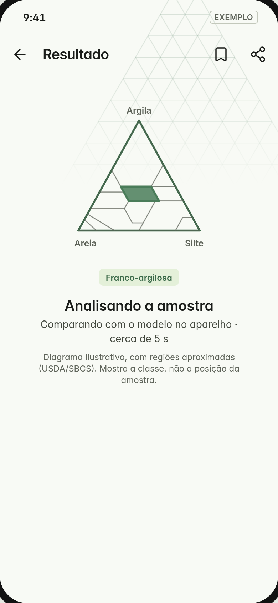
31 Classe formada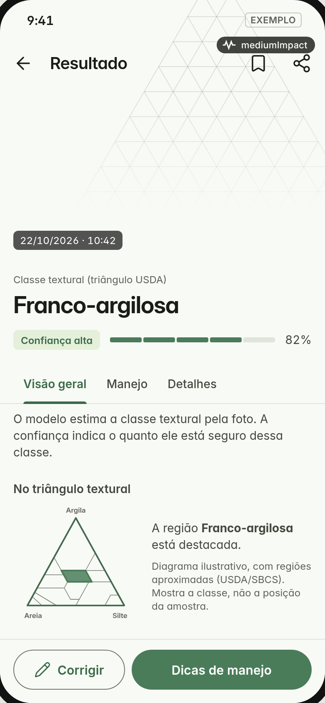
32 Entrada do resultado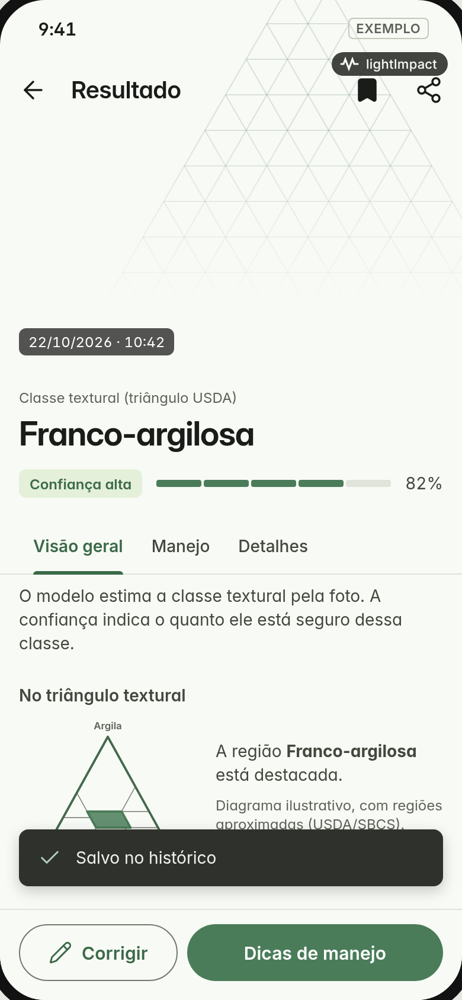
33 Salvo (lightImpact)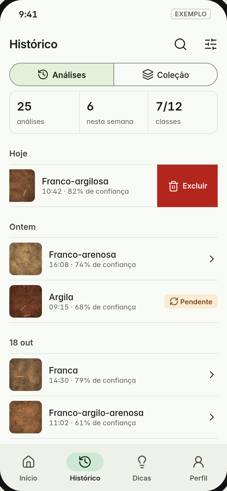
34 Deslizar para excluir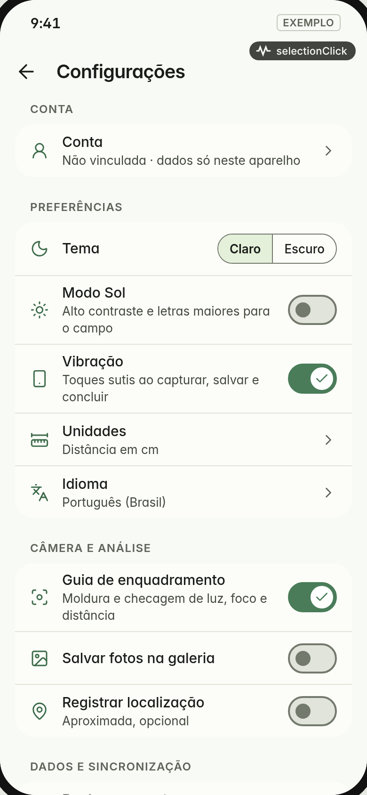
35 Toggle Vibração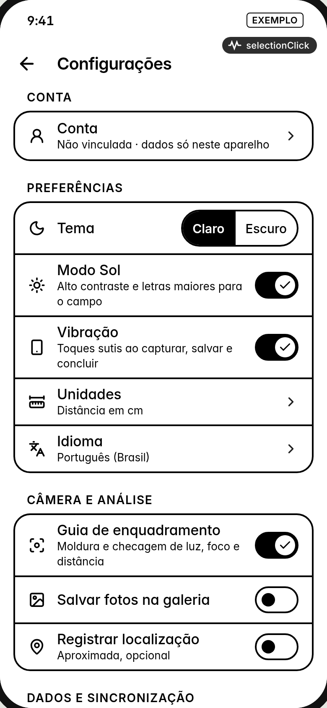
36 Vibração no Modo Sol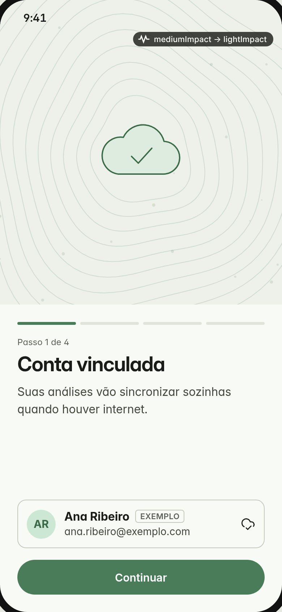
37 Login vinculado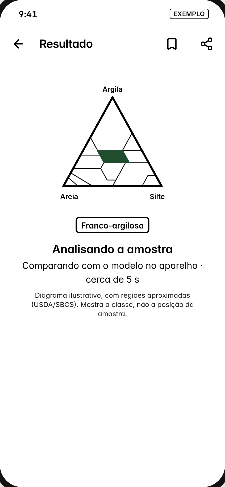
38 Processando no Modo Sol (sem partículas)